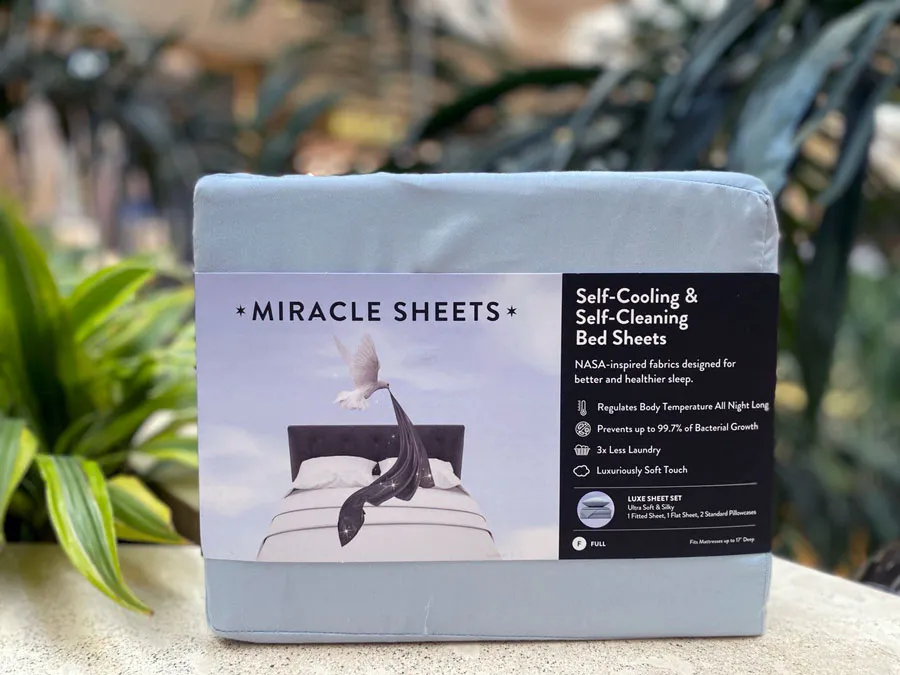
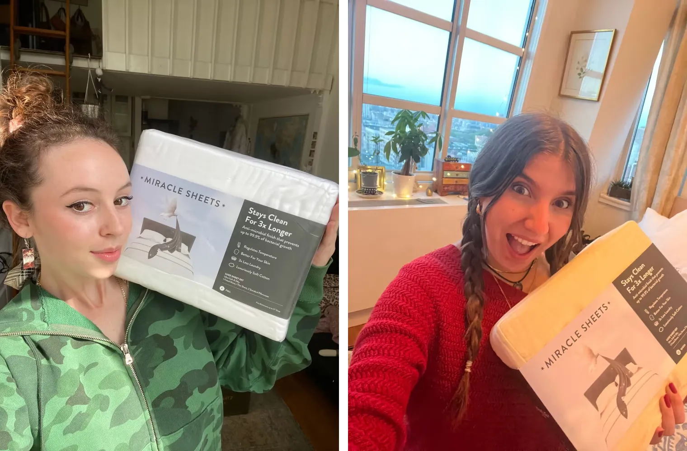

Good Morning America Features The Sheet Set That's Changing How America Sleeps — And We Tested It For 30 Days

Miracle Sheets featured on Good Morning America's Deals & Steals segment
Can you imagine waking up every single morning feeling genuinely rested — not groggy, not sweaty, not itchy — but actually refreshed?
What about sleeping on sheets so naturally clean, so temperature-regulating, that you stopped waking up at 3am drenched in sweat?
If you have been washing your sheets week after week and still waking up overheated, breaking out on your face, and wondering why you never feel truly rested — you are not alone.
Research shows that after just one week of use, the average pillowcase contains over 3 million bacteria per square inch — more than a toilet seat. Most people wash their sheets every 1–2 weeks. That's 7–14 nights sleeping on a surface that's essentially a bacteria incubator pressed against your face.
As we get older, the constant battle we all face is how to protect our sleep, our skin, and our wellbeing. To find that next breakthrough. The thing that actually works.
What if I told you there is a way to sleep on sheets that are essentially self-cleaning, stay fresh 3x longer, and have been shown to dramatically improve skin clarity — all in a matter of days?
Meet Miracle Sheets. The silver-infused bedding brand that just went viral after their Good Morning America feature — and is now selling out faster than they can restock inventory.
Silver — The 'Holy Grail Ingredient' For Bedding
Silver is a very important antimicrobial element that has been well documented for thousands of years. Ancient civilizations stored water and food in silver containers to keep them fresh. Modern hospitals use silver-coated equipment to prevent infection. And now, this same time-tested technology has been permanently woven into the fiber of your bedding.
Silver works by disrupting the cell walls of bacteria, preventing them from growing or reproducing. When silver is infused directly into fabric at the thread level — not sprayed on as a coating that washes away — it retains its antibacterial power wash after wash, permanently.
"If silver is this powerful against bacteria, why isn't it in all bedding products?"
Although it is rightfully considered a breakthrough technology for bedding, it has historically been extraordinarily difficult and expensive to manufacture at scale. Most companies claiming "antimicrobial" sheets are simply applying a topical silver spray that loses 90% of its effectiveness after the first wash. That's not antimicrobial bedding. That's a marketing claim that disappears in your washing machine.
If you have purchased "antimicrobial" bedding in the past and noticed it stopped working after a few washes, that is exactly what happened. The topical coating wore off — and likely didn't have enough silver remaining to have any meaningful effect on bacteria.

Miracle Sheets — GMA Deals & Steals Featured Product
Let Me Tell You About Miracle Sheets' Breakthrough Discovery
After working tirelessly to perfect a method of permanently weaving pure silver into premium long-staple cotton — achieving a concentration high enough to actually eliminate bacteria while still producing a fabric soft enough to rival five-star hotel bedding — they finally did it.
"We finally cracked it. The silver doesn't just sit on the surface of the fabric — it's woven into every single thread. It doesn't wash out, it doesn't fade, and it works every single night."
The team immediately filed patents on what textile scientists are calling the biggest breakthrough in bedding technology in recent memory.
Miracle Sheets launched with the mission to give every American family access to genuinely clean, bacteria-free sleep — and they have not looked back since.
Is Miracle Sheets' Extra Luxe Set Really The Best?
The flagship product from Miracle Sheets is called the Miracle Sheets Set, which contains the highest concentration of silver-infused threads in their lineup — permanently woven into ultra-soft long-staple cotton for a feel that's indistinguishable from the finest hotel bedding.
Just like you, my main concern was whether it actually worked. As we researched, we found that virtually every major home, wellness, and lifestyle publication has called it the best antimicrobial sheet set on the market. Forbes, Women's Health, Men's Health, Better Homes & Gardens — the list goes on and on.
Forbes' home editors called Miracle Sheets "the most scientifically advanced bedding available to consumers," praising both the permanent silver infusion technology and the temperature-regulating properties that help hot sleepers finally rest through the night.
Forbes Magazine
We were sold. We decided to put it to the test and try it out for ourselves. They recently launched in major outlets, but because of the GMA feature creating a surge in demand, we ordered directly through the website.
We ordered ours through the company website and will be writing a follow-up piece on the results — we strongly encourage you to do the same.
We saw that they do offer a 30-day money-back guarantee, so it was basically RISK-FREE to try it. It's a WIN-WIN Situation. Order yours today and write us about your experience!
Miracle Sheets Has Taken The Sleep Industry By Storm…
Since our initial research, this revolutionary brand has been quickly gaining traction around the world. They have sold out on QVC several times, appeared on The View, and even Good Morning America a couple of times.

Miracle Sheets have been spotted in celebrity homes featured across social media
According to their site, they have sold out of their inventory several times and it is difficult for them to keep up with the demand there is for their Miracle Sheets Set. Even some celebrities and dermatologists have been seen publicly recommending Miracle Sheets.
Miracle Sheets Independent Clinical Study Results:
- Eliminates 99.7% of bacteria growth — permanently, wash after wash
- Stays fresh up to 3x longer than conventional cotton sheets
- Significantly reduces acne breakouts and skin irritation caused by bacteria transfer from pillowcases
- Regulates body temperature to reduce night sweats and improve sleep quality
- 100% of users reported sleeping cooler and more comfortably within the first week
- 100% of consumers reported sheets feeling as fresh after 2 weeks as conventional sheets do after 1 wash
We Tested It Ourselves — Did It Live Up To The Hype?
"Put the sheets on the bed and immediately noticed how soft they were — almost silky but breathable. Much softer than I expected. I've spent a lot on bedding over the years and these felt genuinely different. Fell asleep faster than usual and didn't wake up once. Honestly not sure if that was the sheets or excitement, but it was the best night I'd had in weeks."
"Okay, something is genuinely happening. I usually wake up at least once per night, always overheated. Seven consecutive nights — not once have I woken up sweating. My husband noticed too and asked if I'd turned the AC down. The sheets still smell completely fresh after a full week, which has never happened with any set we've owned."
"My skin. I don't know how else to say this — my skin is genuinely clearer. I've had persistent breakouts around my chin and cheeks for years. My dermatologist blamed hormones. Almost three weeks sleeping on these pillowcases and the breakouts have dramatically improved. My husband started asking what new skincare product I was using. I told him it was the sheets. He laughed. He is not laughing anymore."
"I'm completely obsessed. I look and feel like I've reset my sleep entirely. I ordered a second set for the guest room and a set for my daughter who has been struggling with acne since her teens. These are the last sheets I will ever buy."
Miracle Sheets is the real deal. I've never tested a product that delivered on its promises so completely in such a short time. I ordered 3 sets so my mother and my sister could try them too.
If You Can Get Your Hands On A Set — Do It Now
With the holidays around the corner, Miracle Sheets will likely sell out again — it is one of the most talked-about bedding products of the year, and the GMA feature only accelerated the demand.
Miracle Sheets — as featured and awarded across major publications
These sets are selling really fast. If you can get your hands on a set — do it. When we made the purchase, it was delivered to us within a week. Super fast shipping.
Last time we checked, they were running a 46% Discount (TODAY ONLY), but you can save more if you get a bundle, which I highly encourage you to do. Please try it and let us know about your experience.
SEE ALSO: Check to see if Miracle Sheets' Extra Luxe Set is still in stock » GET MIRACLE SHEETS NOW >>
Comments
I saw the GMA segment and ordered immediately. I have had rosacea-triggered breakouts on my cheeks for three years. My dermatologist kept saying there wasn't much else to try. Ten days sleeping on these pillowcases and my skin is noticeably calmer. My husband has since ordered his own set. We are both complete converts.
I'm 62 and have been dealing with night sweats for four years. Hot flashes during the day, drenched at night. My doctor tried everything. Third night in on these sheets, I slept straight through without waking up once. I actually cried that morning. I know that sounds dramatic but you don't understand what it means to finally sleep after years of not sleeping. I've ordered 2 more sets.
My teenage son has severe eczema. We have spent thousands on prescription creams and allergy testing. A friend suggested Miracle Sheets after reading about the silver technology. Within two weeks his nighttime scratching decreased dramatically. His dermatologist was genuinely surprised at his last visit and asked what we had changed. If you have children with sensitive skin, please try these.
Bought these for my wife as a gift after she'd been complaining about waking up hot for years. She was skeptical — she said "sheets are sheets." Two weeks later she told me it was the best gift I'd ever given her. We're both sleeping better than we have in a decade. The quality is also just extraordinary — softest sheets I've ever touched.